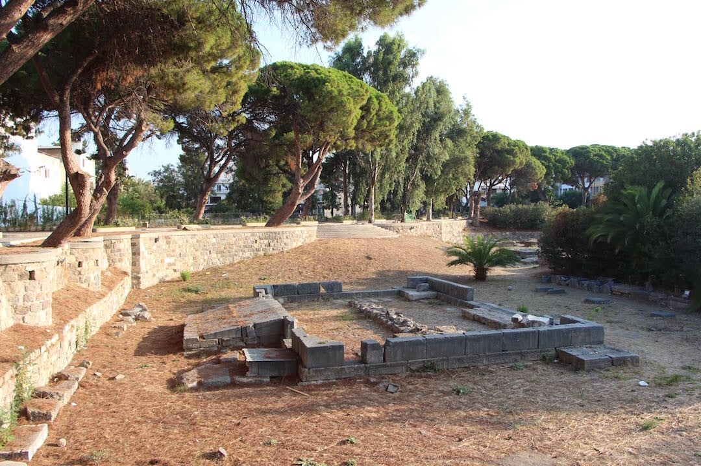

Altaar van Dionysos
Gewijd aan de god van wijn, feesten en vruchtbaarheid – centrum van rituelen en feesten in de oude stad.
God van wijn en feest
Het Altaar van Dionysos in Kos-stad is een van de belangrijke archeologische plekken op het eiland. Het is gewijd aan de Griekse god van de wijn, feesten en vruchtbaarheid.
Hier vonden rituelen en offers plaats voor de inwoners van de stad.
Feesten en theater
Het altaar is waarschijnlijk gebouwd in de 3e eeuw v.Chr. door de Ptolemeïsche heersers, die de invloed van Egypte in de regio versterkten.
Bijzonder is dat het gebruikt werd voor grootschalige feesten en theatrale voorstellingen – typisch voor de Dionysia, het festival ter ere van Dionysos. Gasten en inwoners verzamelden zich hier voor muziek, dans en religieuze rituelen.
Wat je nu nog ziet
Het altaar is niet helemaal intact, maar de restanten geven een goed idee van de afmetingen en de betekenis van de plek in de oude stad.
Het staat symbool voor cultuur en sociaal leven: religie, cultuur en plezier kwamen hier samen – precies zoals het de god van het feest betaamde.

Bezoeken
Je vindt het altaar in Kos-stad, tussen de andere klassieke tempels en ruïnes. Toegang is gratis; het is een openluchtterrein.